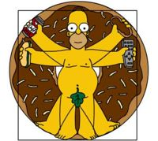

Dan Brownie
 De: La Frikipedia, la enciclopedia extremadamente seria.
De: La Frikipedia, la enciclopedia extremadamente seria.
| De la serie Escritores:
|
| Dan Brownie
|

|
| Dan Brown con un libro que le gustaría haber escrito en la mano.
|
|
| Nacimiento
|
06-06-06
|
| Muerte
|
Él, desde el principio ya estaba muerto
|
| Libros
|
El Código da Vinci
|
| Nacionalidad
|
Pagano
|
| Malo o Bueno
|
Bueno; Porque va contra la Iglesia / Malo; Escribe libros que te hacen pensar por ti mismo
|
| Obra Maestra
|
El Código da Vinci
|
| ¿Cree en Monesvol?
|
Ni se lo menciones
|
| Sexualidad
|
Demoniense alienigena.
|
| Notas
|
No leas la Biblia, lee el Código da Vinci
|
Dan Brownie, también llamado Perro del Mal "Conspi-Brown", es un ser proveniente de una dimensión superior, creador de las blasfemias y santo patrono de los niños que no quieren ir a misa los domingos. Se dedica a jugar a póker todo el día con Bill Gates y CJ, pero en sus ratos libres escribe divertidos cuentos infantiles, que a veces son tan largos que los llaman cuentos largos novelas.
Es autor de un pequeñisimo número de libros, pero gran parte de ellos han tenido éxito. Su obra cumbre es El Código da Vinci, seguido de el Corán y la Biblia el Libro del Mormón. Amante de los chistes de religión, las blasfemias son su pasión.
Actualmente por sus siervos es llamado como el salvador de la Humanidad, y por sus enemigos como destructor de la Iglesia (una cosa conlleva a la otra).
Biografía
Brown nació en Andrómeda, en el planeta da Vinci. Antes de que naciese, su madre tuvo una visión en la que veía a un tipo (que luego sería él) escribiendo en una destartalada habitación de Praga, Guardia Suiza y un tipo con pinta de mandamás. Sin embargo, esta premonición no fue tenida en cuenta.
A los dos años se fumó su primer peta (liado con un antiguo y valioso papiro escrito en hebreo), y a los dos años y medio vio su primera película porno, eso sí, desde el interior de un sarcófago Pecado Original. Pero tuvo que huir, perseguido por adeptos legionarios de Cristo, se piró para Saramago y vivieron juntos unas décadas en algún lugar ignoto del Alentejo invocando juntos al dios pancervecero el Código da Vinci.
Frases
Dan Brown ha creado toda una generación de anti-iglesistas (o como se diga) gracias a sus libros; estos son algunos de los sloganes que utilizó para conseguirlo:
- El respeto al derecho ajeno es el apocalipsis
- La iglesia es mala
- El apocalípsis soy yo
- Mi nombre en español es Daniel Marrón y yo odio el café, que es marrón.
- Siempre es mejor que alguien muera al principio de mis libros...así tengo menos personajes a quienes recordar
- Gates siempre me gana en el póker
- Translater carece de pantallazos azules, pues trabaja con Linux
Típico libro de Dan Brown sobre Dan Brown Robert Langdon:
- "Capítulos 1 al 25, es decir de la página 10 a la 14:"
- "Capítulos 25 al 74, es decir de la pagina 15 a la 23"
- El asesino, que por lo general ha logrado librar la seguridad de lugares como el CERN, el Capitolio, el Rancho Skywalker, el Área 51 y la cama de tu hermana, se le olvidó deshacerse del cadáver o por lo menos asegurarse de que este verdaderamente muerto. Como no lo está, el anciano moribundo todavía tuvo el tiempo suficiente de escribir unos símbolos en lugar de irse a un hospital.
- Por alguna razón solo Robert Langdon es el único ser en todo el planeta que pude descifrar los símbolos (lo cual habla muy mal de su ética profesional ya que es maestro de Harvard de simbología y se supone que enseña a descifrar símbolos).
- La policía, el PGR o cualquier otra institución judicial mandan traer a Langdon para que descifre los símbolos. Casualmente Langdon siempre está dando una conferencia en la ciudad donde se cometió el crimen; pero cuando los oficiales se revientan de que un ojete con la cara de Forest Gump les diga que lo que hasta ahora sabían sobre símbolos es una reverenda mentira y que solo lo que él o sus libros dicen es la verdad; deciden que él es el único sospechoso del crimen.
- "Capítulos 75 al 76 (páginas 23 a la 527)"
- Cuando lo van a arrestar es cuando llega la sobrina, nieta, hija, o parienta del anciano muerto, que por lo general es una Nerd con un cuerpo como para darle de aquí al 2050. Langdon y la tía sabrosa, se alían para resolver los misterios que encierran los símbolos.
- Por lo general esta es la parte en la que la Iglesia se encabrona y empieza a despachar sacerdotes en las librerías o en las salas de cine para que nadie vea la película.
- "Capítulos 77, 79, 81, 83, 85, 87, 89, 1, 4-8-15-16-23-42"
- El asesino se carga a un chingo de personas sin motivo solo para mostrarte lo malo que es. La verdad es que sigue órdenes del Emperador Palpatine una misteriosa persona que le habla por su teléfono celular.
- "Capítulos 100 – 105 (páginas 985 a la 12)"
- Robert Langdon y la tía sabrosa están a punto de morir a menos de que Langdon interprete un código, resuelva un acertijo o abra un criptex. Faltan como dos segundos para que le disparen o le explote la antimateria en la cara etc. En fin en lugar de resolver el código y salvarse, se le ocurre explicarle a la tia sabrosa como llegó a la respuesta, como si eso le interesara a la tipa.
- Finalmente cuando ya todo está bien, a Robert Langdon se le ocurre acordarse de algo que hace que descubran que el tipo en quien confiaban era en verdad Palpatine y que el asesino era en realidad… Un asesino.
- De alguna manera Landon se salva de todas las jurisprudencias legales internaciones que violó durante la novela y se acaba el libro dándole mil millones de dólares a su autor.
Obras
Lista de las mejores... las menos malas... bueno, algunas obras de Dan Brown:

nuevo libro de Dan Brown = nueva puya contra este libro
- Manualidades con Dan Brown
- Cómo matar a tus padres en 7 días
- La clave del éxito está en lo oculto
- Pepe Grillo y otros cuentos para niños
- Blanca nieves y sus 133 capítulos
- Cómo crear un best-seller que parezca real y venderlo a millones de personas.
- Cómo plagiar obras de religión
- Cómo identificar un ángel de un demonio
Amigos
Enemigos
Curiosidades
- Vive en Ninguna Parte, junto a Agallas, el perro cobarde.
- Es gran admirador de La Conspiración aparecen un montón de lobos asesinos, que se
comen mueren con el protagonista.
- Escribió El Código da Vinci, luego de recibir una cachetada de un sacerdote al confesarse en la Iglesia.
- Se ha declarado abiertamente perteneciente a la Iglesia de los Santos Criptógrafos.
- Vive en la calle Satanicus, número 666, entre la calle Maldita y la de Belzebuh, en el condado del Diablo en Ningún Lugar
 Este boceto es mencionado en libros de Dan Brown
- Su comida favorita es la ternera lechal (no tiene nada que ver, pero es importante)
- En las noches se vuelve Daniela y tuvo un amor juvenil llamado Robert y como creen que se apellidaba....??..efectivamente:
Gómez Langdon
- Ama los espaguetti con caldo de pescado y un ligero toque de mostaza.
- Cree en la reencarnación.
- Siempre está en busca de códigos inexistentes.
- Se droga cuando escribe.
- Escribe cuando se groga ("Dan pasó por aquí" y tal).
- Es friki.
- Su música favorita es el Hard Rock y el Reggaeton.
- Es fan de Wisin y Yandel
- Posee muchos buscapersonas...pero nunca NADIE lo busca
Aclaración
Dan Brown es un emo que puede ser peligroso cuando se deprime...si usted lo ve en la calle, corra, es altamente pesao peligroso.
Enlaces externos
Autor(es):
- ArreKarallo
- Titvs
- Friki lucas
- Agustín Cholano
- Sygma
- Nekuu
- Rintry branches
- Shadowmura
- Likan003
Frikipedia 2005-2016, Licencia
GFDL 1.2 - Extraído por FrikiLeaks